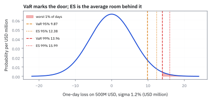
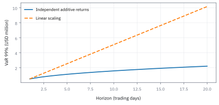
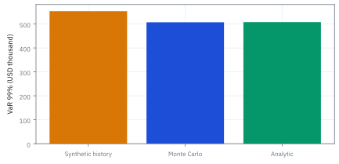
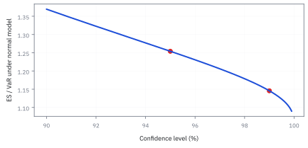
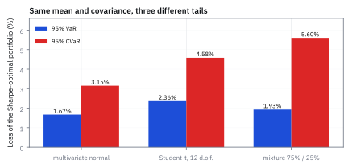
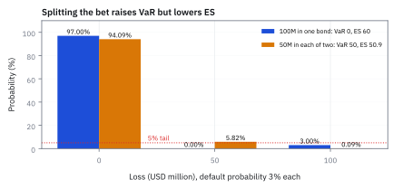

17.1 Value at Risk and Expected Shortfall
เมื่อรู้จุดเริ่มของวันเลวร้ายแล้ว ต้องรู้ด้วยว่าข้างในเลวร้ายแค่ไหน
พอร์ตเทรด \$500 ล้าน ผลตอบแทนรายวันแกว่ง 1.2% และค่าเฉลี่ยราวศูนย์ วันที่แย่หนึ่งในร้อยวันจะเสียอย่างน้อยเท่าไร และถ้าวันแบบนั้นมาถึงจริง จะเสียเฉลี่ยเท่าไร?
เฉลย: อย่างน้อย \$13.96 ล้าน และเฉลี่ย 15.99 ล้าน ถ้าต้องถือ 10 วันเป็น 44.14 ล้าน แต่ถ้าหางของตลาดอ้วนกว่าระฆัง ค่าเฉลี่ยของวันร้ายอาจถึง 22.10 ล้าน เงินที่กันไว้ตามสูตรระฆังจะขาดไป 6.11 ล้าน
ทำไมไม่ใช้ variance ต่อ
สไลด์ของคอร์สให้เหตุผลสามข้อ variance เหมาะเฉพาะการกระจายแบบระฆังหรือรูปทรงรีที่สมมาตร มันไม่เห็นหางอ้วนและวันที่เหวี่ยงไกลผิดปกติ และมันลงโทษวันที่กำไรมากเท่ากับวันที่ขาดทุนมาก ทั้งที่นักลงทุนกลัวแค่ด้านเดียว
ตัววัดในหัวข้อนี้จึงดูเฉพาะหางด้านขาดทุน ตัวอย่างหลักของหน้าคือพอร์ตเทรด \$500 ล้าน ผลตอบแทนรายวันมี $\sigma$ เท่ากับ 1.2% และค่าเฉลี่ยตัดเป็นศูนย์ได้ เพราะในหนึ่งวัน ค่าเฉลี่ยเล็กกว่า $\sigma$ ราว 30 เท่า
ทุกตัวเลขหลังจากนี้มาจากรูปทรงที่สมมติ ไม่ได้มาจากข้อมูล จึงต้องเขียนสมมติฐานไว้ก่อน ผลตอบแทนแต่ละวันอิสระกัน $\sigma$ คงที่ และหางเป็นระฆัง ข้อสุดท้ายผิดแน่ และขั้นที่ 9 จะวัดว่าผิดไปเท่าไร
ศัพท์ที่ใช้ในหัวข้อนี้
- Value at Risk (VaR)
- จุดตัดของขาดทุน ณ ระดับความเชื่อมั่นที่กำหนด ใช้บอกว่าขาดทุนจะไม่เกินค่านี้ในสัดส่วนของวันที่กำหนด เช่น 99 วันจาก 100 วัน
- Expected Shortfall (ES)
- ค่าเฉลี่ยของขาดทุนในวันที่เลยจุดตัด VaR ไปแล้ว ใช้วัดว่าวันร้ายร้ายแค่ไหน ใช้กำหนดเงินกันสำรองตามเกณฑ์ Basel ตั้งแต่ปี 2016
- Conditional Value at Risk (CVaR)
- ชื่อที่สไลด์ของคอร์สใช้เรียก ES เป็นของชิ้นเดียวกัน บางตำราเรียก tail conditional expectation
- quantile
- จุดตัดที่แบ่งโอกาสสะสมจากซ้ายตามสัดส่วนที่ต้องการ ใช้หาขอบของหาง
- normal distribution
- การกระจายรูประฆังคว่ำที่สมมาตรรอบค่าเฉลี่ย ใช้เป็นแบบจำลองมาตรฐาน เพราะรู้ค่าเฉลี่ยกับความผันผวนก็คำนวณทุกอย่างได้
- Student-t distribution
- การกระจายรูประฆังที่หางอ้วนกว่า องศาอิสระยิ่งน้อยหางยิ่งอ้วน ใช้แทนตลาดที่วันร้ายมาบ่อยกว่าที่ระฆังทำนาย
- historical simulation
- การใช้ผลตอบแทนที่เกิดขึ้นจริงในอดีตมาเรียงแล้วนับ โดยไม่สมมติรูปการกระจาย
- Monte Carlo
- วิธีสุ่มสถานการณ์เป็นพันเป็นหมื่นครั้งจากแบบจำลอง แล้วนับผลเหมือนข้อมูลจริง ใช้เมื่อไม่มีสูตรปิด
- subadditivity
- สมบัติที่ความเสี่ยงของพอร์ตรวมต้องไม่เกินผลบวกของความเสี่ยงย่อย ใช้รับรองว่าการกระจายความเสี่ยงไม่ถูกลงโทษ
- coherent risk measure
- ตัววัดความเสี่ยงที่ผ่านกติกาพื้นฐานชุดหนึ่ง รวมถึง subadditivity ES ผ่าน แต่ VaR ไม่ผ่าน
- order statistics
- ข้อมูลตัวอย่างที่เรียงจากน้อยไปมาก เขียน $L_{(k)}$ คือตัวที่ $k$ ใช้หาจุดตัดและค่าเฉลี่ยหางจากข้อมูลโดยตรง
สัญลักษณ์ที่ใช้ในหัวข้อนี้
| สัญลักษณ์ | ความหมาย | หน่วย |
|---|---|---|
| $V$ | มูลค่าพอร์ตวันนี้ เป็นฐานที่แปลงสัดส่วนกลับเป็นเงิน | USD |
| $L$ | ขาดทุน นับเป็นบวกเมื่อเสีย ซึ่งกลับเครื่องหมายจากผลตอบแทน | USD หรือ % |
| $R$ | ผลตอบแทนหนึ่งช่วงในรูปสัดส่วน | สัดส่วน |
| $\mu,\sigma$ | ค่าเฉลี่ยและ standard deviation ของผลตอบแทนหนึ่งช่วง | สัดส่วน |
| $c$ | ระดับความเชื่อมั่นที่เลือก เช่น 0.99 | ไม่มีหน่วย |
| $z_c$ | จุดตัดบนระฆังมาตรฐานที่ตรงกับระดับนั้น | ไม่มีหน่วย |
| $\Phi,\varphi$ | พื้นที่สะสมใต้ระฆังมาตรฐาน และความสูงของระฆังที่จุดหนึ่ง | ไม่มีหน่วย |
| $Q_L(u)$ | จุดตัดขาดทุนที่สัดส่วน $u$ | USD |
| $h,N,K$ | จำนวนวันที่ถือ จำนวนข้อมูล และอันดับที่หยิบมาเป็นจุดตัด | วัน, ตัว, อันดับ |
ขั้นที่ 1 — ลองด้วยมือ: 100 วันของขาดทุน เรียงแล้วนับ
ก่อนสูตร ลองกับข้อมูลที่นับได้: มีขาดทุน 100 วัน อยากรู้ว่าวันเลวร้ายเริ่มตรงไหน และข้างในเฉลี่ยลึกเท่าไร
$L_{\text{top}}$ คือขาดทุนหกวันที่ใหญ่ที่สุด หน่วยพัน USD เรียงจากมากไปน้อย ระดับ 99% หมายถึงตัวเลขที่ 99 วันจาก 100 วันไม่แย่กว่า คือวันที่แย่เป็นอันดับสอง \$540,000 มีวันเดียวที่แย่กว่า นี่คือ VaR และ ES คือค่าเฉลี่ยของวันที่แย่กว่านั้น ซึ่งมีวันเดียวคือ 620,000
ระดับ 95% มีห้าวันที่แย่กว่า VaR จึงเป็นขาดทุนอันดับหก 330,000 และ ES คือค่าเฉลี่ยของห้าวันแย่สุด ห้าวันรวมกันได้ 2,300,000 เฉลี่ยได้ 460,000 ES สูงกว่า VaR เสมอ เพราะเฉลี่ยเฉพาะวันที่เลยจุดตัดไปแล้ว
สูตรระฆังในขั้นถัดไปแค่แทนการนับวันด้วยพื้นที่ใต้ระฆัง แทนที่จะนับว่ามีกี่วันที่แย่กว่า ก็วัดพื้นที่หางแทน
ขั้นที่ 2 — จากผลตอบแทนเป็นขาดทุน
ต้องกลับเครื่องหมายให้ชัดก่อน เพราะทั้งหัวข้อพูดถึงขาดทุนเป็นบวก และมีการพลิกอสมการหนึ่งครั้ง ซึ่งเป็นสาเหตุอันดับหนึ่งที่รายงานความเสี่ยงอ่านผิดหาง
งานของขั้นนี้คือย้ายคำถามจากภาษาของผลตอบแทน ไปเป็นภาษาของขาดทุน ขาดทุนเป็นบวกเมื่อเสียเงิน จึงกลับเครื่องหมายของผลตอบแทน แล้วคูณมูลค่าพอร์ตเพื่อให้เป็นหน่วยเงิน
เพราะกลับเครื่องหมาย อสมการจึงพลิกด้วย ตรงนี้คือจุดที่พลาดแล้วได้คำตอบกลับหาง จากนั้นแปลงเป็นหน่วยมาตรฐาน แล้วย้ายข้าง ก้อนแรกคือความผันผวนคูณระยะมาตรฐาน ก้อนที่สองหักผลตอบแทนเฉลี่ยออก เพราะกำไรที่คาดไว้ช่วยลดขาดทุนที่จุดตัด
ขั้นที่ 3 — นิยามที่ใช้ได้กับทั้งสูตรและข้อมูล
สไลด์นิยาม VaR ว่าเป็น quantile ของขาดทุน และ CVaR ว่าเป็นค่าเฉลี่ยของขาดทุนเมื่อรู้แล้วว่าเลย VaR ไป นิยามแบบค่าต่ำสุดข้างล่างใช้ได้แม้ข้อมูลมีค่าซ้ำหรือกระโดด
VaR คือขาดทุนค่าน้อยที่สุดที่โอกาสเสียไม่เกินค่านั้นถึง $c$ สำหรับการกระจายแบบต่อเนื่อง ค่านี้คือ quantile ธรรมดา สำหรับข้อมูลที่นับได้ มันบอกว่าต้องหยิบอันดับไหน ซึ่งขั้นที่ 8 จะใช้
ES เฉลี่ยจุดตัดทุกจุดตั้งแต่สัดส่วน $c$ ถึง 1 คือเฉลี่ยทุกอย่างที่อยู่ลึกกว่าจุดตัด ทั้งสองตัวโตขึ้นเมื่อ $c$ สูงขึ้น และ ES ไม่เคยต่ำกว่า VaR เพราะทุกค่าในหางมากกว่าหรือเท่าขอบของหาง
ขั้นที่ 4 — จุดตัดของพอร์ต \$500 ล้าน
เปิดตารางระฆังย้อนกลับ รู้พื้นที่ก่อนแล้วหาจุดตัด จากนั้นคิดเป็นสัดส่วนของพอร์ตก่อนคูณเป็นเงิน
1.6449 ไม่ใช่ 1.96 ค่า 1.96 คือจุดตัดของช่วง 95% แบบสองด้าน ซึ่งเหลือหางข้างละ 2.5% แต่ VaR สนใจหางด้านเดียว ถ้าใช้ z ละเอียดกว่า 2.326348 ได้ 13,958,087 ต่างกัน \$287 จากการปัดเท่านั้น
VaR 99% คือ 2.79% ของพอร์ต และ 95% คือ 1.97% อัตราส่วนระหว่างสองระดับเท่ากับอัตราส่วนของ z พอดี เพราะ $V$ กับ $\sigma$ ตัดกันหมด VaR โตเป็นเส้นตรงตามขนาดพอร์ตและตาม $\sigma$ ลดพอร์ตครึ่งหนึ่ง VaR ลดครึ่งหนึ่งพอดี จึงใช้ตั้ง limit หรือเพดานความเสี่ยงของแต่ละโต๊ะได้ง่าย
ขั้นที่ 5 — หาค่าเฉลี่ยหางทีละขั้น
จุดตัดบอกแค่ว่าหางเริ่มตรงไหน การเฉลี่ยความเสียหายที่เลยจุดนั้นไปใช้เครื่องมือชิ้นเดียว คือ derivative ของระฆัง ซึ่งใช้มาตั้งแต่หัวข้อ 1.9
ระฆังมาตรฐานมีสมบัติพิเศษ ตัวแปรคูณความสูงของระฆังเท่ากับค่าลบของ derivative ของมัน integral ของหางจึงทำได้ทันทีโดยย้อน derivative พจน์ที่ปลายอนันต์เป็นศูนย์เพราะระฆังลดลงถึงศูนย์ เหลือแค่ความสูงที่จุดตัด
หารด้วยพื้นที่หาง $1-c$ เพื่อแปลงเป็นค่าเฉลี่ย ES ถามว่าเมื่อรู้แล้วว่าวันนี้เลยจุดตัด จะเสียเฉลี่ยเท่าไร ตัวหารจึงเป็นขนาดของหาง ไม่ใช่ 1
ขั้นที่ 6 — ความสูงของระฆังที่จุดตัด แล้วแทนค่า ES
ES ต้องใช้ความสูงของระฆังที่จุดตัด ไม่ใช่พื้นที่สะสม ความสูงมีสูตรปิด จึงคิดด้วยมือได้
0.398942 คือยอดของระฆัง ที่ระยะ 2.33 เท่าของ $\sigma$ ระฆังเตี้ยลงเหลือ 6.7% ของยอด ES 99% คือ 15.99 ล้าน หรือ 3.2% ของพอร์ต มากกว่า VaR 2.03 ล้าน ES 95% คือ 12.38 ล้าน มากกว่า VaR 2.51 ล้าน
อัตราส่วน ES ต่อ VaR ที่ 95% คือ 1.254 และที่ 99% คือ 1.146 ยิ่งลึกในหาง ระฆังยิ่งแคบลงเร็ว ค่าเฉลี่ยของหางจึงอยู่ใกล้ขอบมากขึ้น นี่คือลักษณะของหางบาง ตลาดจริงไม่เป็นแบบนี้ ดูขั้นที่ 9
ขั้นที่ 7 — ขยายจาก 1 วันเป็น 10 วัน
Basel ถามความเสี่ยงสิบวัน เพราะการปิดสถานะจริงใช้เวลา ถ้าผลตอบแทนรายวันอิสระกัน variance ของสิบวันคือสิบเท่าของวันเดียว
ทางลัดคูณ $\sqrt{10}$ ใช้ได้เพราะค่าเฉลี่ยเป็นศูนย์ ถ้าไม่เป็นศูนย์ ค่าเฉลี่ยบวกกันแบบเส้นตรง คูณ $h$ แต่ความผันผวนโตแบบราก คูณ $\sqrt h$ ตามแถวสุดท้าย
กฎนี้พังทันทีถ้าวันร้ายมักตามด้วยวันร้าย ซึ่งคือ volatility clustering ของหัวข้อ 16.4 หรือถ้าพอร์ตมี option ที่ตอบสนองไม่เป็นเส้นตรง ในวิกฤตจริงการคูณราก 10 จึงมักให้ค่าต่ำกว่าความจริง
Figure 17.1a — จุดตัดกับค่าเฉลี่ยหางของพอร์ต \$500 ล้าน

ขาดทุนหนึ่งวันของพอร์ต \$500 ล้าน ที่ความผันผวน 1.2% ต่อวัน ความผันผวนหนึ่งช่วงคือ \$6 ล้าน เส้นประคือ VaR 95% และ 99% ที่ 9.87 และ 13.96 ล้าน เส้นจุดคือ ES ที่ 12.38 และ 15.99 ล้าน พื้นที่แดงคือ 1% ของวันที่แย่ที่สุด
Figure 17.1b — ความเสี่ยงโตตามรากของจำนวนวัน

VaR 99% และ ES 99% ของพอร์ตเดียวกันเมื่อถือ 1 ถึง 20 วัน ที่ 10 วันได้ 44.14 และ 50.57 ล้าน เส้นประคือการคูณจำนวนวันตรง ๆ ซึ่งผิด เพราะวันดีกับวันร้ายหักล้างกันบางส่วน
ขั้นที่ 8 — นับจากข้อมูลจริง: 60 เดือนของไฟล์ Assignment 2
ไฟล์ Assignment 2 ของคอร์สมีผลตอบแทนรายเดือน 60 เดือนของสินทรัพย์สามตัว ถือเท่ากันตัวละหนึ่งในสาม แล้วถามหา VaR แบบ historical simulation ไม่สมมติรูประฆังเลย
เดือนแรกสามตัวให้ผลตอบแทน 2.1675, −1.8883 และ 3.0712% รวมกันเป็นบวก พอร์ตได้กำไร ขาดทุนจึงติดลบ เดือนที่สามคือ −2.5194, 1.5773 และ −3.1840% พอร์ตเสีย 1.3754% ขาดทุนห้าเดือนที่ใหญ่ที่สุดคือ 2.3707, 2.1450, 1.9877, 1.9191 และ 1.8807%
สไลด์ให้หยิบตัวที่ $K=\lceil pN\rceil$ เมื่อเรียงจากน้อยไปมาก คือตัวที่ 57 ซึ่งเป็นขาดทุนใหญ่อันดับสี่ ตรงกับนิยามของขั้นที่ 3 เพราะ 57 เดือนจาก 60 ไม่แย่กว่าค่านี้ ครบ 95% พอดี ES คือค่าเฉลี่ยของสามเดือนที่แย่กว่า 6.5034 คือ 1.9877 บวก 2.1450 บวก 2.3707 ที่ระดับ 99% ได้ $K=60$ คือตัวใหญ่สุด 2.3707%
สูตร CVaR ในสไลด์บวกตั้งแต่ตัวที่ 57 ถึง 60 ซึ่งมีสี่ตัว แต่หารด้วยสาม ได้ 2.81% เมื่อข้อมูลเป็นพันตัวความต่างนี้เล็กมาก แต่ที่ 60 ตัวมันเกินไปหนึ่งในสาม หางมีข้อมูลแค่สามเดือน ตัวเลขทั้งชุดจึงแกว่งได้มาก
ถ้าสมมติระฆังด้วยค่าเฉลี่ยกับ $\hat\sigma_L$ ของ 60 เดือน ได้ VaR ต่ำกว่าการนับ แต่ ES สูงกว่าเล็กน้อย 2.0626 คือ 0.103128 หารด้วย 0.05 จากขั้นที่ 6
Figure 17.1c — 60 เดือนของ Assignment 2 กับหาง 5%

ขาดทุนรายเดือนของพอร์ตถือเท่ากันสามตัว จุดสีคือสี่เดือนที่แย่ที่สุด เส้นประส้มคือ VaR 95% ตัวที่ 57 จาก 60 เส้นประแดงคือ ES ค่าเฉลี่ยของสามเดือนที่เหลือ เส้นน้ำเงินคือค่าที่ได้ถ้าสมมติระฆัง
ขั้นที่ 9 — สามวิธี ข้อมูลชุดเดียวกัน: ระฆังผิดไปเท่าไร
กลับมาที่พอร์ต \$500 ล้าน เอกสารของคอร์สคำนวณอีกสองวิธี วิธีแรกใช้ผลตอบแทนจริง 1,000 วัน วิธีที่สองสุ่ม 100,000 เส้นทางจาก Student-t ที่มีองศาอิสระ 4
วิธี historical หยิบขาดทุนอันดับที่ 10 จากแย่สุดคือ 3.15% และเฉลี่ยสิบวันแย่สุดได้ 3.92% ถ้าใช้นิยามของขั้นที่ 3 ตรง ๆ ต้องหยิบอันดับที่ 11 ซึ่งต่างกันเล็กน้อย หลายโต๊ะใช้แบบอันดับที่ 10 จึงต้องระบุเสมอว่าใช้แบบไหน
อัตราส่วน ES ต่อ VaR ของระฆัง ข้อมูลจริง และ Student-t เรียงเป็น 1.146, 1.244 และ 1.348 หางยิ่งอ้วน ค่าเฉลี่ยของหางยิ่งอยู่ไกลจากขอบ ถ้ากันเงินไว้ 15.99 ล้านตามระฆัง วันวิกฤตจริงจะขาดราว 6 ล้าน หรือต่ำไป 27.6% และวันนั้นคือวันที่ไม่มีใครให้ยืม
ข้ามวิธี VaR ขยับ 17% จาก 13.96 เป็น 16.40 แต่ ES ขยับ 38% จาก 15.99 เป็น 22.10 ความต่างอยู่ในหางลึก ซึ่งเป็นที่ที่ VaR มองไม่เห็น
Figure 17.1d — สามวิธีกับพอร์ตเดียวกัน

VaR 99% และ ES 99% หนึ่งวันของพอร์ต \$500 ล้าน จากสูตรระฆัง จากข้อมูลจริง 1,000 วัน และจากการสุ่มแบบหางอ้วน แท่ง ES ห่างกันมากกว่าแท่ง VaR
ขั้นที่ 10 — การทดลองในสไลด์: ค่าเฉลี่ยและ covariance เท่ากัน หางต่างกัน
สไลด์เอาพอร์ต Sharpe สูงสุดจากไฟล์ Excel ของคอร์ส ขาดทุนคือ $L=-r^\top x$ แล้วสุ่มผลตอบแทน 10,000 ครั้งจากสามแบบจำลอง ที่จงใจตั้งให้ค่าเฉลี่ยและ covariance เท่ากัน
Student-t ที่องศาอิสระ 12 มี covariance เป็น 12/10 เท่าของ matrix ที่ใส่ สไลด์จึงใส่ $\tfrac{10}{12}V$ ให้ covariance ออกมาเป็น $V$ พอดี แบบผสมคือ 75% ของเวลาตลาดสงบ ความผันผวน 0.76 เท่า และ 25% ตลาดปั่นป่วน 1.5 เท่า รวมแล้ว variance เป็น 0.9957 เท่า แทบเท่าเดิม
แถวล่างคือ VaR 95% และ CVaR 95% สามแบบนี้หน้าตาเหมือนกันสำหรับ mean-variance แต่ CVaR ต่างกันเกือบเท่าตัว แบบผสม VaR ขยับน้อย แต่ CVaR พุ่งเป็น 5.60% เพราะช่วงปั่นป่วนที่นาน ๆ มาทีซ่อนอยู่หลังจุดตัด
สไลด์ชี้อีกข้อ ถ้าขาดทุนเป็นระฆังจริง VaR และ CVaR ถูกกำหนดด้วยค่าเฉลี่ยกับ $\sigma$ ทั้งหมด การทำให้ VaR หรือ CVaR ต่ำสุดจึงได้คำตอบเดียวกับ mean-variance ความต่างเกิดเฉพาะเมื่อหางไม่ใช่ระฆัง
Figure 17.1e — ค่าเฉลี่ยเท่ากัน covariance เท่ากัน หางต่างกัน

ผลจำลอง 10,000 ครั้งจากสไลด์ ของพอร์ต Sharpe สูงสุด แบบผสมมี VaR ต่ำกว่า Student-t แต่ CVaR สูงกว่าทุกแบบ
ขั้นที่ 11 — ตัวอย่างค้าน: กระจายความเสี่ยงแล้ว VaR กลับแย่ลง
พันธบัตรสองตัว โอกาสผิดนัดตัวละ 3% อิสระกัน ผิดนัดแล้วเสียเงินต้นทั้งหมด เทียบถือตัวเดียว \$100 ล้าน กับแบ่งถือตัวละ 50 ล้าน หน่วยในสูตรเป็นล้าน USD
$L_1$ คือขาดทุนเมื่อถือตัวเดียว โอกาสเสียคือ 3% น้อยกว่าหาง 5% จุดตัดจึงตกตรงที่ยังไม่เสียอะไร VaR เป็นศูนย์ทั้งที่มีโอกาสเสีย 100 ล้าน
$L_2$ คือขาดทุนเมื่อแบ่งถือ โอกาสที่อย่างน้อยหนึ่งตัวผิดนัดคือ $1-0.97^2=5.91\%$ เกิน 5% จุดตัดจึงกระโดดเป็น 50 ล้าน VaR ของแต่ละตัว 50 ล้านเป็นศูนย์ทั้งคู่ แต่ของพอร์ตรวมเป็น 50 ละเมิด subadditivity
ES มองทั้งหาง หาง 5% ของพอร์ตแบ่งมีกรณีผิดนัดทั้งคู่ 0.09% กับกรณีตัวเดียวอีก 4.91% เฉลี่ยได้ 50.9 ล้าน ต่ำกว่า 60 ของการถือตัวเดียว และไม่เกิน 30 บวก 30 ของสองตัวย่อย เอกสารต้นฉบับพิมพ์ค่านี้เป็น 59.1 แต่คิดตามนิยามได้ 50.9
Figure 17.1f — แบ่งเงินแล้ว VaR ขึ้น แต่ ES ลง

การกระจายของขาดทุนเมื่อถือพันธบัตรตัวเดียว 100 ล้าน กับแบ่งถือสองตัว โอกาสเสีย 50 ล้านของพอร์ตแบ่งคือ 5.82% ซึ่งทะลุเส้นหาง 5% จุดตัดจึงกระโดด
VaR กับ CVaR: ข้อดีข้อเสียตามสไลด์
| ตัววัด | ข้อดี | ข้อเสีย |
|---|---|---|
| VaR | ดูเฉพาะหางด้านขาดทุน และทนต่อค่าผิดปกติในข้อมูล เพราะขึ้นกับลำดับ ไม่ขึ้นกับขนาดของตัวสุดโต่ง | ไม่บอกว่าเลยจุดตัดไปแล้วเสียเท่าไร จูงใจให้ยัดความเสี่ยงไว้ในหางลึก และไม่ subadditive ตามขั้นที่ 11 |
| CVaR หรือ ES | วัดความรุนแรงทั้งหาง เป็น subadditive การกระจายไม่ถูกลงโทษ และการเลือกพอร์ตที่ทำให้ CVaR ต่ำสุดเขียนเป็น linear program แก้ได้เร็ว | เป็นค่าเฉลี่ยของหาง จึงไวต่อค่าสุดโต่งและความคลาดเคลื่อนของการประมาณหาง อย่างที่เห็นในขั้นที่ 8 ที่หางมีข้อมูลแค่สามตัว |
คำว่ายัดความเสี่ยงไว้ในหาง มีตัวอย่างในกับดักข้างล่าง
คำตอบ — ความเสี่ยงหนึ่งวันของพอร์ต \$500 ล้าน
คำถาม: พอร์ตเทรด \$500 ล้าน ผลตอบแทนรายวันแกว่ง 1.2% และค่าเฉลี่ยราวศูนย์ วันที่แย่หนึ่งในร้อยวันจะเสียอย่างน้อยเท่าไร และถ้าวันแบบนั้นมาถึงจริง จะเสียเฉลี่ยเท่าไร?
ของที่มี: ขั้นที่ 4 ถึง 9
1. VaR หนึ่งวันที่ 95% คือ \$9.87 ล้าน และที่ 99% คือ 13.96 ล้าน เท่ากับ 1.97% และ 2.79% ของพอร์ต
2. ES 99% คือ 15.99 ล้าน มากกว่า VaR 2.03 ล้าน อัตราส่วน 1.146
3 ถือ 10 วัน VaR 99% คือ 13.96 คูณ 3.162 ได้ 44.14 ล้าน และ ES 50.57 ล้าน
4 แบบหางอ้วน Student-t ให้ ES 22.10 ล้าน วิธีระฆังจึงต่ำไป 27.6%
ตรวจเองใน 10 วินาที: 13.96 หาร 9.87 ได้ 1.414 เท่ากับ 2.3263 หาร 1.6449 และ 6 ล้าน คูณ 2.3263 ได้ 13.96 ล้าน
แปลว่าอะไร: VaR ใช้ตั้ง limit ของโต๊ะเทรดได้เพราะโตเป็นเส้นตรงตามขนาดพอร์ต แต่เงินที่ต้องกันไว้ต้องดูจาก ES และต้องถามเสมอว่าหางที่ใช้อ้วนแค่ไหน ส่วนต่าง 6 ล้านระหว่างระฆังกับหางอ้วนคือเงินที่ขาดในวันที่หาเงินยากที่สุด
ตัวอย่างที่สอง — ถือพันธบัตรตัวเดียว หรือแบ่งสองตัว
คำถาม: พันธบัตรสองตัว โอกาสผิดนัดตัวละ 3% อิสระกัน ถือตัวเดียว \$100 ล้าน กับแบ่งถือตัวละ 50 ล้าน แบบไหนเสี่ยงกว่า เมื่อวัดด้วย VaR 95% และด้วย ES 95%?
ของที่มี: ขั้นที่ 3 และขั้นที่ 11
1 ถือตัวเดียว: โอกาสเสีย 3% น้อยกว่า 5% VaR จึงเป็นศูนย์ ES คือ 0.03 คูณ 100 หาร 0.05 ได้ 60 ล้าน
2 แบ่งถือ: โอกาสเสียอย่างน้อย 50 ล้านคือ 5.91% VaR จึงเป็น 50 ล้าน ES คือ 50.9 ล้าน
3. VaR บอกว่าการกระจายทำให้แย่ลง จาก 0 เป็น 50 แต่ ES บอกว่าดีขึ้น จาก 60 เป็น 50.9
ตรวจเองใน 10 วินาที: 1 − 0.97 × 0.97 = 0.0591 ซึ่งมากกว่า 0.05
แปลว่าอะไร: ถ้าวัดผลงานของ desk ด้วย VaR เขาจะรวมความเสี่ยงไว้ที่ตัวเดียวเพื่อให้ตัวเลขเป็นศูนย์ ES ไม่เปิดช่องนี้ ผู้กำกับดูแลจึงย้ายไปใช้ ES ด้วยเหตุผลทางคณิตศาสตร์ ไม่ใช่แค่ความชอบ
กับดัก: VaR ไม่ใช่ขาดทุนสูงสุด และถูกหลบได้
VaR เป็นป้ายบอกทางเข้าหาง ไม่ใช่กำแพง ลองกลยุทธ์ที่ได้วันละ 0.1% แต่มีโอกาส 0.5% ต่อวันที่จะเสีย 20% โอกาสเสีย 0.5% น้อยกว่าหาง 1% VaR 99% จึงเป็นกำไร 0.1% ดูปลอดภัยสุด ๆ
แต่ ES 99% คือ 0.005 คูณ 20% บวก 0.005 คูณ −0.1% หารด้วย 0.01 ได้ 9.95% ต่อวัน นี่คือการยัดความเสี่ยงไว้ในหางที่สไลด์เตือน ใครถูกวัดด้วย VaR อย่างเดียวจะถูกดึงไปหากลยุทธ์แบบนี้
ที่มาที่ไป: รายงานหน้าเดียวที่ผู้บริหารขอทุกวัน
ในช่วงต้นทศวรรษ 1990 ผู้บริหารของธนาคารเพื่อการลงทุนแห่งหนึ่งในนิวยอร์ก ขอรายงานหน้าเดียวทุกวันตอนสี่โมงสิบห้า ที่สรุปว่าธนาคารทั้งธนาคารเสี่ยงเท่าไรในวันพรุ่งนี้
ปัญหาคือธนาคารถือสินทรัพย์คนละชนิดเป็นหมื่นรายการ และไม่มีหน่วยกลางที่เทียบกันได้ คำตอบที่ทีมพัฒนาขึ้นคือแปลงทุกอย่างเป็นตัวเลขเดียวหน่วยเงิน คือขาดทุนที่จะไม่เกินในกรณีปกติ ซึ่งเผยแพร่ในปี 1994 และกลายเป็นมาตรฐานของทั้งอุตสาหกรรม
แต่มันบอกแค่ว่าหางเริ่มตรงไหน ไม่บอกว่าข้างในลึกแค่ไหน และบางครั้งมันบอกว่าการกระจายความเสี่ยงทำให้แย่ลง เกณฑ์ Basel จึงย้ายจาก VaR 99% ไปใช้ ES 97.5% ในปี 2016
โค้ดตรวจตัวเลขของหน้านี้ทั้งหมด
from math import ceil, exp, sqrt
from scipy.stats import norm
V, s = 500e6, 0.012 # the 500M book, mean 0
z95, z99 = round(norm.ppf(0.95), 4), round(norm.ppf(0.99), 4)
assert (z95, z99) == (1.6449, 2.3263)
assert round(z99 * s * V) == 13_957_800 and round(z95 * s * V) == 9_869_400
assert abs(norm.ppf(0.99) * s * V - 13_958_087) < 1 # full-precision z
phi99 = 0.398942 * exp(-z99**2 / 2)
assert round(phi99, 6) == 0.026655
assert abs(phi99 / 0.01 * s * V - 15_993_000) < 500
assert abs(0.398942 * exp(-z95**2 / 2) / 0.05 * s * V - 12_375_360) < 500
assert round(15.993 / 13.9578, 3) == 1.146 and round(12.375 / 9.8694, 3) == 1.254
assert abs(z99 * s * sqrt(10) * V - 44_138_400) < 100
assert round(15.993 * sqrt(10), 2) == 50.57
assert round((22.10 - 15.99) / 22.10, 3) == 0.276
worst = [2.3707, 2.1450, 1.9877, 1.9191, 1.8807] # Assignment 2, % per month
K = ceil(0.95 * 60)
assert K == 57 and worst[60 - K] == 1.9191 # 57th of 60 = 4th largest
assert round(sum(worst[:3]) / 3, 4) == 2.1678
assert round(sum(worst[:4]) / 3, 4) == 2.8075 # the slide's 4 terms over 3
assert round(-0.0969 + 1.6449 * 1.1476, 4) == 1.7908
assert round(-0.0969 + 2.0626 * 1.1476, 4) == 2.2701
assert round(0.75 * 0.76**2 + 0.25 * 1.5**2, 4) == 0.9957
assert round(12 / 10 * 10 / 12, 12) == 1
p = 0.03 # two bonds
assert round(1 - (1 - p)**2, 4) == 0.0591 and round(2 * p * (1 - p), 4) == 0.0582
assert round(p * 100 / 0.05, 6) == 60
assert round((p**2 * 100 + (0.05 - p**2) * 50) / 0.05, 6) == 50.9
assert round((0.005 * 20 + 0.005 * -0.1) / 0.01, 6) == 9.95 # tail stuffingโค้ดตรวจ VaR และ ES ของพอร์ต \$500 ล้าน ทั้งหนึ่งวันและสิบวัน การนับจาก 60 เดือนของ Assignment 2 variance ของแบบจำลองสามแบบในสไลด์ ตัวอย่างพันธบัตรสองตัว และกลยุทธ์ที่ยัดความเสี่ยงไว้ในหาง
สรุปที่ใช้ได้จริง
- ระบุขาดทุนเป็นบวก พร้อมระดับความเชื่อมั่น จำนวนวัน และวิธีประมาณทุกครั้ง
- พอร์ต \$500 ล้าน ที่ความผันผวน 1.2% ต่อวัน: VaR 99% หนึ่งวัน 13.96 ล้าน ES 15.99 ล้าน สิบวัน 44.14 และ 50.57 ล้าน
- จากข้อมูล หยิบตัวที่ $\lceil pN\rceil$ เป็น VaR และเฉลี่ยตัวที่แย่กว่าเป็น ES ถ้าหางมีข้อมูลไม่กี่ตัว ตัวเลขแกว่งมาก
- ค่าเฉลี่ยและ covariance เท่ากันไม่ได้แปลว่าหางเท่ากัน CVaR ของสไลด์ต่างกันตั้งแต่ 3.15% ถึง 5.60%
- VaR ไม่ subadditive และถูกหลบได้ ES ไม่มีปัญหานี้ แต่ประมาณยากกว่า